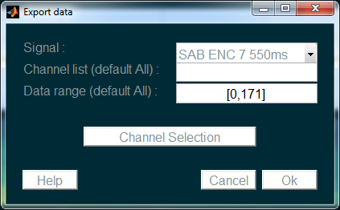

Export Data¶
This functionnality allows to export data from a signal in an matlab format (.mat).
Go to Signals>Export>Export data. The following window appears:

Parameters are :
- Signal : Signal to export data from
- Chanel list : Matlab vector indicating the list of channels to export. By default, all channels will be exported.
- Data range : Two-elements vector indicating the temporal range of data to export. By default, the whole time range is selected.
Each channel is saved in a seperate file. All the files are automatically stored in a folder named after the signal’s description. Once imported into Matlab, the data appears into a matlab matrix named data.
Note
This way of exporting data allows to load them easily into Wave_clus for action potential detection and sorting.